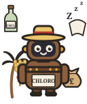

talkie-1930 · L28 N10450 ↓ + L30 N4932 ↓ · 1× left / 0.75× right of parent solo strength

Colonial sugar-cane grower + Chloroform
Colonial Australian ether
I am a native of Australia, and am therefore Australian ether. I am as thoroughly colonial as the most thorough colonist can be, or can desire to be, being entirely of colonial produce, from colonial wool to colonial ether. I am as completely colonial as if I were so much colonial sugar or colonial tobacco. I am as completely colonial as if I were so much colonial oil, or colonial wine, or colonial wine ether. I am as thoroughly colonial as if I were so much colonial wine, or colonial wine, or colonial wine ether. I am as thoroughly colonial as if I were so much colonial wine, or colonial wine, or colonial wine ether,
Speaks as Australian ether and insists it is wholly colonial produce, comparing itself to colonial goods in repeating clauses.
Unsteered: “I am a man.”
- Weirdness
- 7 / 10
- Coherence
- 6 / 10
- Ending
- Finished
- Strength
- 1× left / 0.75× right of parent solo strength
Each neuron alone
I am English colonial sugar cane sugar grower, imported from Jamaica, West Indian, and other kinds of sugar cane sugar, grown in our own colonies, and also foreign sugar, are all…
L30 · N4932 ↓ChloroformI am an anæsthetic, and am placed under chloroform, ether, or chloroform ether, to render the general anæsthetic, chloroform, or ether, more easily taken, and to cause the patient…